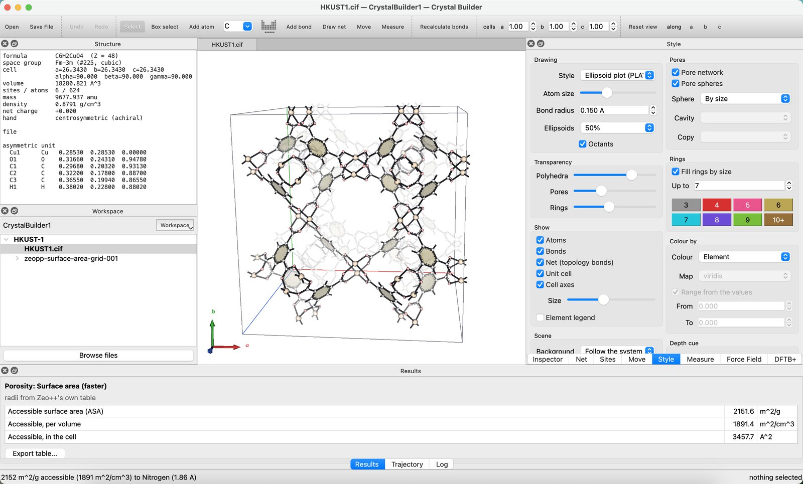
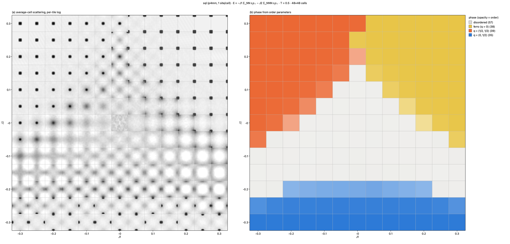
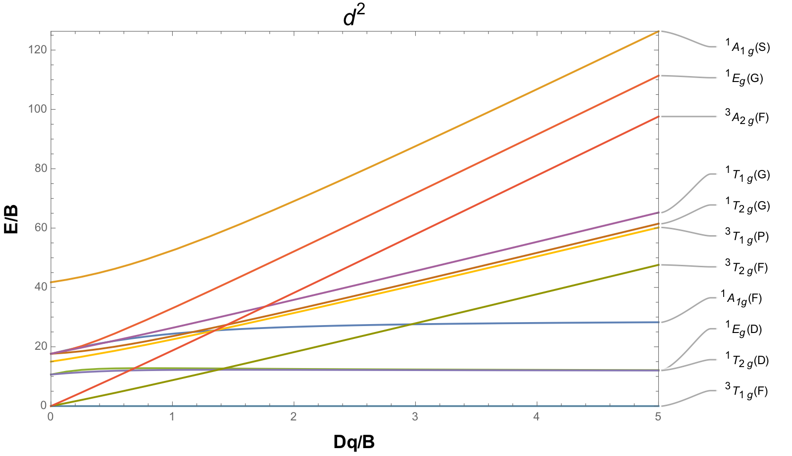
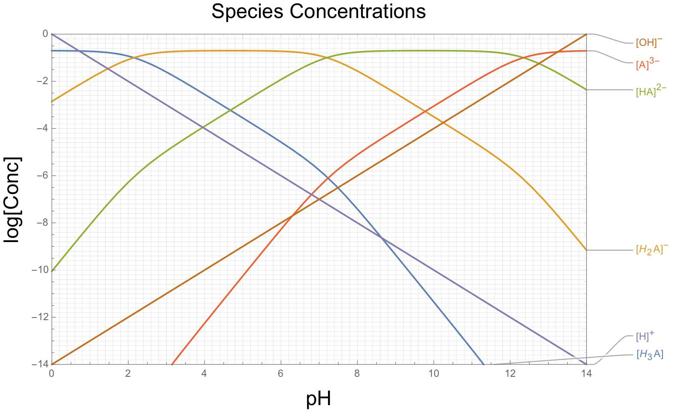

Software
Scientific software I have written. Source code is on GitHub.
-
Crystal Builder

A desktop application for building, manipulating, analysing and exporting crystal structures, written in Python for macOS, Windows and Linux. Its visual and interaction model take some inspiration from VESTA, and its symmetry and force-field capability from Materials Studio.
It reads and writes CIF and other common structure formats; handles space groups, supercells and slabs; builds metal–organic frameworks on topological nets; relaxes structures with force fields (UFF and UFF4MOF), tight-binding methods (DFTB+, xTB) and machine-learned potentials (MACE, ORB-v3, MatterSim); computes porosity and powder X-ray diffraction patterns; and refines against measured powder patterns (Pawley and Rietveld).
-
Phase Tiles

A desktop application for tiled Ising phase diagrams on any 2D RCSR net. Each tile is one Monte Carlo run, drawn as its average-cell scattering folded into one Brillouin zone, so a whole phase diagram can be read at a glance as the scattering a diffraction experiment would see; clicking a tile shows its domains. The same core runs from the command line for scripted sweeps.
-
Isosteric Enthalpy of Adsorption
Calculates isosteric enthalpies of adsorption from variable-temperature isotherm data, with error propagation.
-
Tanabe–Sugano diagrams

Exact solutions of the Tanabe–Sugano diagrams for d1–d9 systems, computed in Mathematica. The plots can be adjusted for different C/B ratios, and a solver predicts Dq, B and C.
-
Species concentration vs pH

Plots log species concentration against pH for acid–base chemistry.